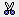
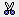

The Storm Track Control displays tropical storm observation and model output tracks. Currently the McIDAS-V supports both the Automated Tropical Cyclone Forecasting System (ATCF) data as well as data from the Shanghai Typhoon Institute.
To load in ATCF data select the Tools->Text Data->ATCF Tropical Storm Data menu item in the Main Display window. This creates a data source with a predefined path to the National Hurricane Center FTP site. Then, create the Storm Track display.
The display control shows the set of available storms on the left panel organized by year and basin, e.g., Atlantic (AL), Eastern Pacific (EP) and Central Pacific (CP).
At the top of the list is an option (Yearly Tracks) which allows the user to display the observed tracks for all the storms in a given year. You can load and/or unload any number of years worth of observed tracks. The color swatch changes the color of the tracks for a given year. The Time Mode menu allows one to change the animation mode, e.g., use the year or use the storm start time.
To show the observation and all of the model results for a single storm select
the storm in the list and press the  button.
You can load any number of storms but they are shown in different panels. You
can use the View->Storm Tracks menu to list out
all of the loaded storms, remove them all, etc. Once a storm is loaded it can
be removed with the  icon shown in the upper right.
button.
You can load any number of storms but they are shown in different panels. You
can use the View->Storm Tracks menu to list out
all of the loaded storms, remove them all, etc. Once a storm is loaded it can
be removed with the  icon shown in the upper right.
Once a storm is loaded the first thing you should do is to specify which "Techs" (or models) to use by bringing up the control's Properties dialog Edit->Properties menu. Use Ctrl+A to select all items in the tab, the left/right arrows to remove/add an item from/to the Use column, or Delete to remove an item from the Use Column.

The Storm display panel consists of three tabs: Tracks, Table and Storm Chart.
The Tracks tab controls the display and animation of the tracks.

The Table tab shows a tabular listing of all of the observational track data and individual forecast model runs. On the left is a tree view organized by the Tech and model run time. Selecting one of the model runs will display the data in the table. The main File->Save->Export to Spreadsheet menu allows you to export the track data to an Excel spreadsheet. In the File Dialog are options to select what is to be saved.

The Storm Chart tab shows time series charts of selected tracks. Under the main Edit menu you can any number of new forecast time or forecast hour charts. The forecast time chart is based around the model run time of the selected forecasts. The forecast hour charts selects data across the different model run times, e.g., you can show the 12 hour forecast from each model run.
To do the charting of the storm track, one or more Techs need to be selected. Once selected the Forecast Hour/Forecast Time list is populated. One or more times can be selected (Ctrl+click). Each Parameter that is selected will result in a new chart shown on the right.
| 0 DB | Disturbance | |
|
1 TD |
Tropical Depression |
2 TS |
Tropical Storm |
3 TY |
Typhoon |
4 ST |
Super Typhoon |
5 TC |
Tropical Cyclone |
6 HU |
Hurricane |
Many of these menu items seen utilizing this tool are standard options that can be found in the Menus section of the Layer Controls page. However, there are some options that are unique to this display.
The File menu has these unique items:
The Edit menu has these unique items:
The View menu has these unique items: